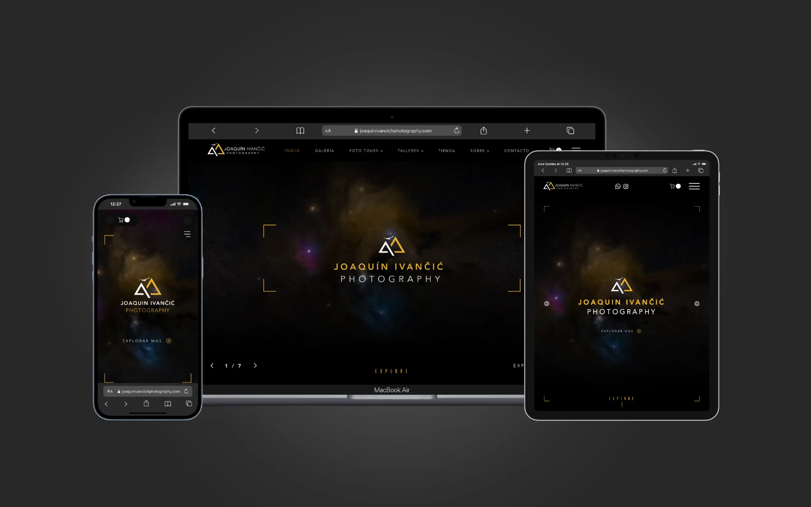
Web · Tienda01
Joaquín Ivančić Photography
Desarrollo sitios web a medida para negocios — programados a mano desde cero, con verdadero oficio en cada detalle. Están hechos para rendir: alcanzar tus objetivos, convertir visitantes en clientes potenciales y representar tu marca como se merece.
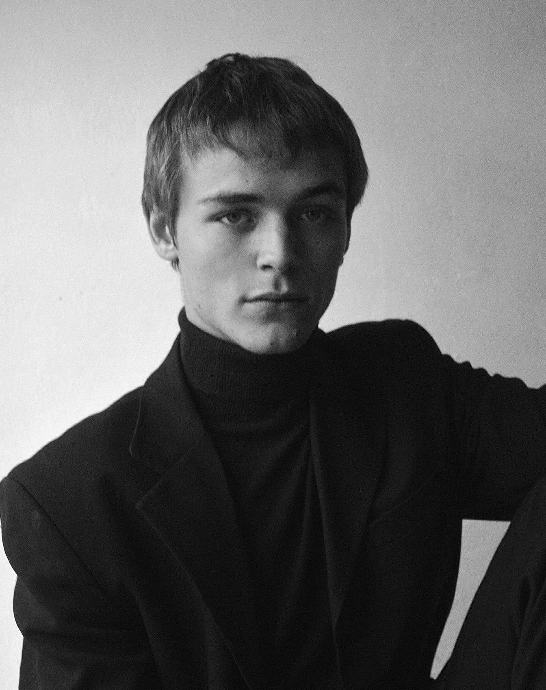
BG — 01 / Diseñador web
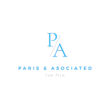
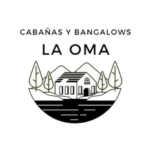
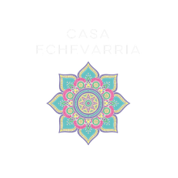
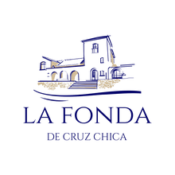
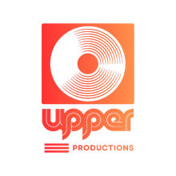
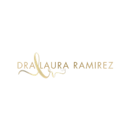
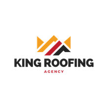
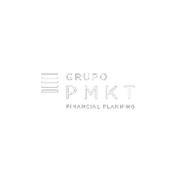
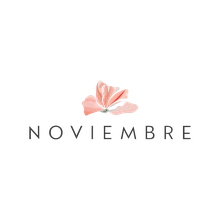
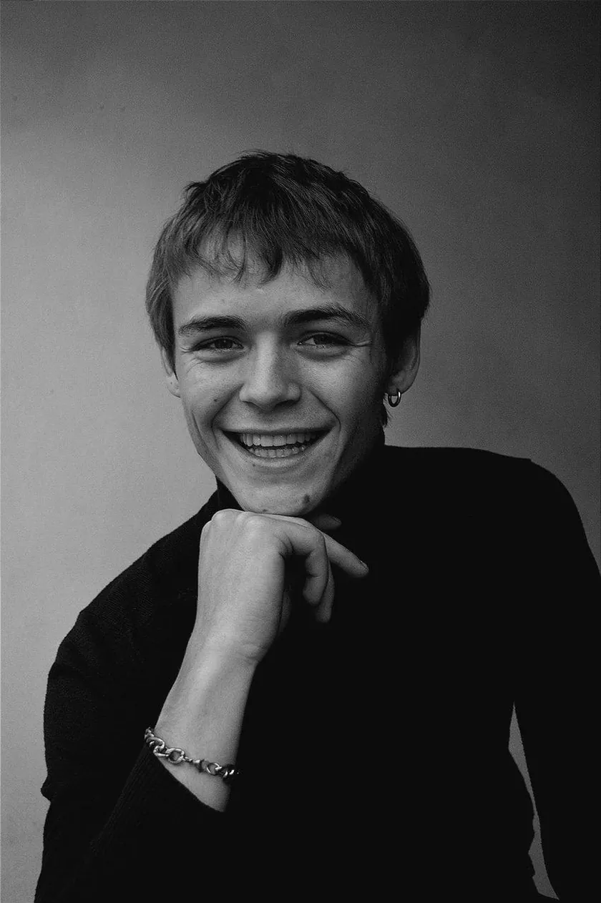
BG — 02 / De AubeyzonDesarrollo sitios web completamente personalizados, programados desde cero, para negocios que valoran la calidad, la atención al detalle y una identidad propia. Cada proyecto comienza entendiendo a fondo tu negocio, tus objetivos y el tipo de clientes que querés atraer, para diseñar un sitio que refleje quién sos y que esté pensado para generar resultados reales.
Mi experiencia en fotografía, videografía y producción de música me aporta una mirada creativa que va más allá del diseño web, con un fuerte enfoque en la estética, la narrativa y la forma en que las personas perciben una marca. Combinado con un desarrollo meticuloso, el resultado es un sitio web atractivo, rápido, intuitivo y construido para durar.
Trabajo de manera cercana con cada cliente durante todo el proceso, manteniendo una comunicación transparente y comprometiéndome con el éxito del proyecto incluso después de que el sitio esté publicado.
Un gran sitio web no es una sola cosa bien hecha: son cuatro trabajando juntas. Esto es lo que realmente hace que un sitio haga crecer un negocio, y cómo construyo cada parte.
Un sitio pensado para que las personas correctas te encuentren cuando buscan.
El sitio más lindo no sirve de nada si nadie llega a él: que te encuentren es la puerta de la que depende todo lo demás.
Es SEO on-page de verdad, no algo que se agrega al final: investigación de palabras clave para descubrir qué buscan realmente tus clientes, y luego contenido y estructura pensados en torno a esa intención de búsqueda y a los temas en los que querés posicionarte. Y como cada sitio está programado a mano, las señales técnicas que premian los buscadores están integradas: marcado limpio, carga rápida, etiquetado correcto.
Más visitantes ideales que te encuentran por su cuenta, sin pagar por cada clic.
Una primera impresión que se ve como vos y genera confianza en segundos.
Las personas deciden si confiar en vos casi al instante, y un diseño genérico o anticuado hace dudar, en silencio, de la calidad de tu trabajo.
Empieza por un hero memorable —la primera pantalla que ve el visitante, pensada para impactar al instante— y sigue con una imagen premium y coherente en todas las páginas. Diseño todo en torno a tu marca desde cero, nunca una plantilla, para que el sitio se sienta inconfundiblemente tuyo y se vea a la altura de lo que cobrás por tu trabajo.
Los visitantes te toman en serio desde el primer segundo, y tu sitio refleja tu verdadero valor.
Un sitio rápido y confiable que funciona perfecto en cualquier dispositivo.
Los sitios lentos o torpes pierden gente antes de que vea tu trabajo, y la mayoría de tus visitantes están en el celular.
Cada sitio sigue un sistema deliberado: una lista clara de lo que un sitio de alto rendimiento realmente necesita. Aplico las estrategias más nuevas y comprobadas, ubico cada elemento donde corresponde, programo todo a mano desde cero y lo paso por un control de calidad sistemático antes de publicarlo.
Menos visitantes perdidos por frustración, y un sitio que sigue rindiendo en lugar de quedar obsoleto.
Un sitio que convierte visitantes en consultas y clientes, no solo en visitas.
El tráfico y la buena imagen no sirven si la gente no da el siguiente paso: acá es donde un sitio realmente hace crecer un negocio.
Ubico llamados a la acción claros y visibles justo donde la persona está lista para actuar, y elimino la fricción en el medio: formularios cortos, próximos pasos evidentes y una forma fácil de contactarte desde cualquier página. Las señales de confianza —reseñas y tus mejores trabajos— aparecen en esos puntos de decisión, y la estructura y los textos están pensados para guiar al visitante a escribirte en lugar de irse.
Que más de los visitantes que ya tenés se conviertan en consultas reales y clientes.
Esta es la diferencia entre un sitio que solo está ahí y uno que trabaja.
Construyamos el tuyo
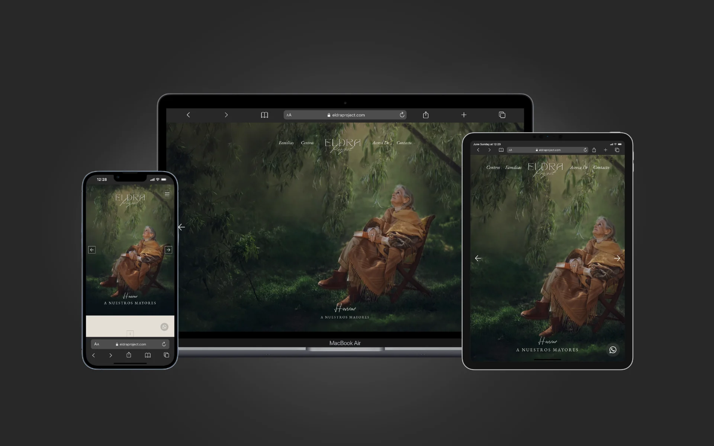
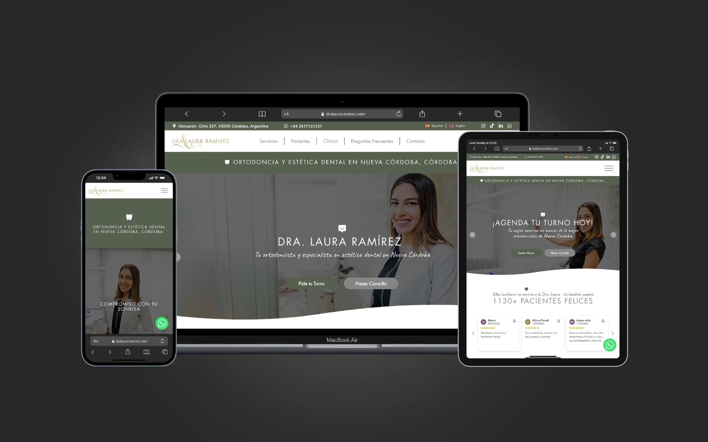
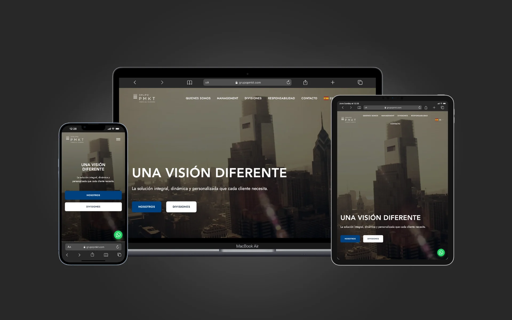
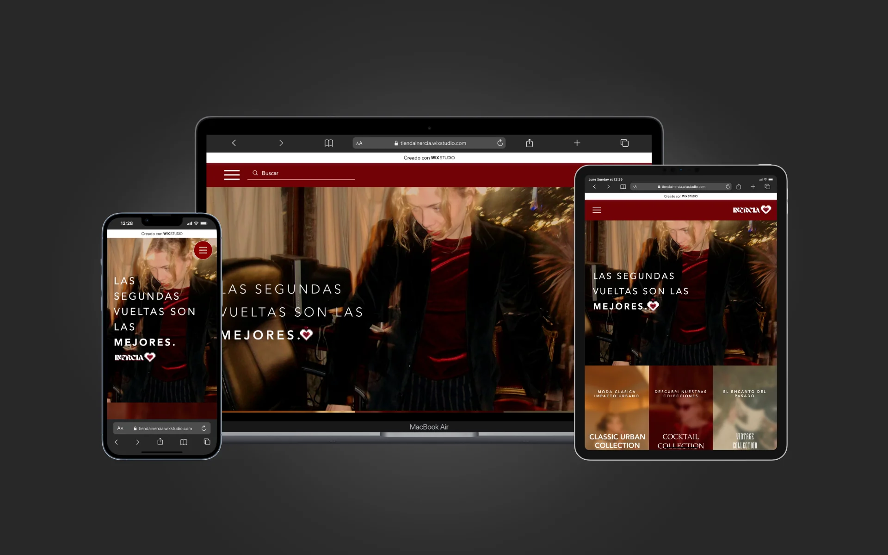
Te mantengo informado e involucrado de principio a fin: comunicación clara y honesta, y respuestas cuando las necesitas. Vas a sentirte escuchado en cada paso.
Me tomo el tiempo de entender a qué te dedicas y trato cada proyecto como si fuera mi propia marca. Tu éxito es la medida del mío.
Tu crecimiento es mi crecimiento. Por eso, cada decisión de diseño, contenido y estrategia está enfocada en crear el mejor sitio web posible para ayudarte a alcanzar tus objetivos.
Trabajar con Bouan es una experiencia increíble. Me acompañó en todo el proceso, entendiendo perfectamente mi visión y ayudándome a darle forma. Definitivamente recomiendo su trabajo.
Empezamos Inercia entre dos amigas, sin saber bien cómo llevar la idea a una tienda online. Bouan se tomó el tiempo de entender la marca —lo vintage, lo sostenible— y nos hizo parte de cada decisión. Quedó fiel a nuestra identidad y es fácil comprar. Esa confianza fue lo que más valoramos.
Quería una página que transmitiera lo que doy en el consultorio: confianza y cercanía, sin tecnicismos. Bouan escuchó cómo trabajo y creó algo simple y claro, donde el paciente entiende qué ofrezco y me escribe por WhatsApp sin complicaciones. Cada ajuste que pedí lo resolvió de inmediato.
En nuestro sector, transmitir seriedad desde el primer minuto lo es casi todo, y Bouan lo captó enseguida. Ordenó nuestras dos unidades de negocio en un diseño sobrio y fiel a nuestra imagen. Fue puntual y transparente en todo momento: nunca tuve que perseguir una respuesta. Hoy proyectamos mucho más profesionalismo.
ELDRA es muy personal: retrato a personas mayores y sus historias, y necesitaba una web que tratara eso con respeto, sin caer en lo sensiblero. Bouan se tomó el tiempo de escuchar antes de diseñar, entendió el tono justo y lo trasladó a cada sección. Honesto y cercano de principio a fin.
Contraté los servicios de Bouan para ayudar a hacer crecer mi negocio, y los resultados hablan por sí solos. Nuestras reservas aumentaron un 25% respecto al año pasado. El diseño web, la creatividad y el nivel de servicio que recibí superaron ampliamente mis expectativas. Confiable, eficiente y rápido para dar soluciones. Gracias, Bouan. Muy recomendado.
¿Quieres un poco más de tranquilidad antes de decidir? Con gusto te comparto el contacto de cualquier cliente con el que haya trabajado (siempre con su permiso) para que escuches de primera mano cómo fue trabajar conmigo.
Cuando me confías tu sitio, no recibes solo un diseño. En un mismo proyecto recibes estrategia, desarrollo, optimización y un sistema que genera autoridad y confianza para tu negocio.
Un diseño a medida de tu marca, pensado para generar confianza y guiar a cada visitante hacia la acción que importa.
Un sitio sólido, optimizado para todos los dispositivos y con una experiencia de usuario fluida e intuitiva.
Optimizo cada página —estructura y contenido— para que Google te encuentre.
Un gestor de contenidos a tu medida para que actualices tu contenido tú mismo, sin depender de nadie.
Para clientes que prefieren gestionar su propio contenido, disponible como un servicio CMS gestionado opcional con plan mensual.Antes de diseñar una sola pantalla, me tomo el tiempo de escucharte y entender tu negocio, tus objetivos, tus valores y a quién quieres llegar.
Doy forma a una experiencia visual única que representa tu marca. Te muestro avances y decidimos juntos: tu mirada guía el proceso.
Construyo el sitio responsivo, cuidando cada detalle, y mantengo la comunicación abierta para que sepas cómo avanza en todo momento.
Publicamos, ajustamos y te dejo todo listo para captar clientes. Y sigo cerca después: para mí esto es el comienzo de una relación, no el final de un encargo.
Algunos de los primeros sitios que creé. Fueron parte de mi aprendizaje y ya no reflejan del todo quién soy hoy como diseñador, pero forman parte del recorrido.
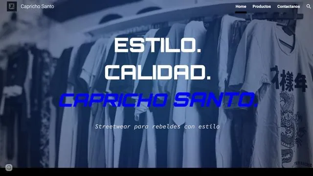
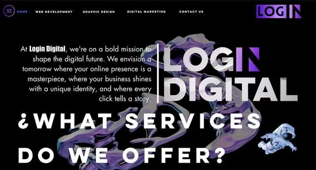
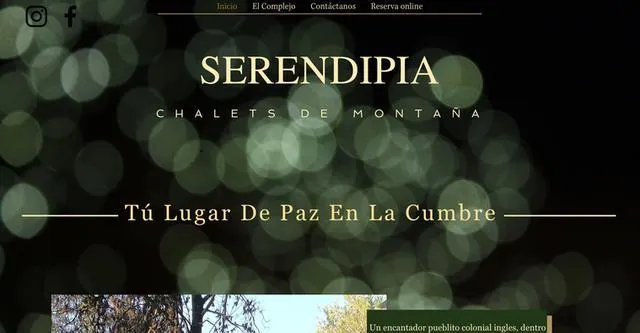
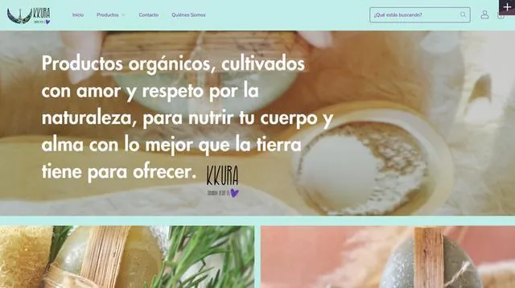
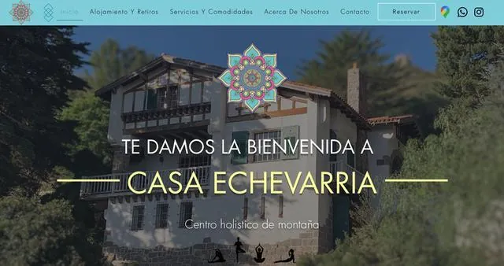
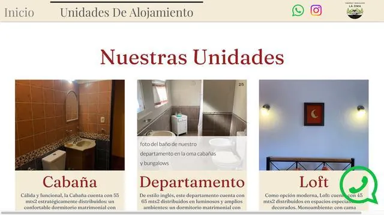
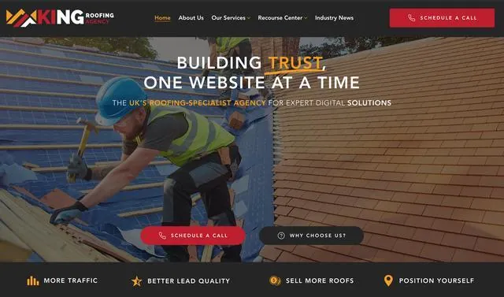
Cuéntame sobre tu proyecto y tu negocio: te escucho, te respondo rápido y te explico con claridad cómo podríamos trabajar juntos. Más que un encargo puntual, busco construir una relación de confianza a largo plazo.
Si lo necesitas, con gusto te comparto el contacto de cualquiera de mis clientes para que puedas preguntarles directamente sobre su experiencia trabajando conmigo.